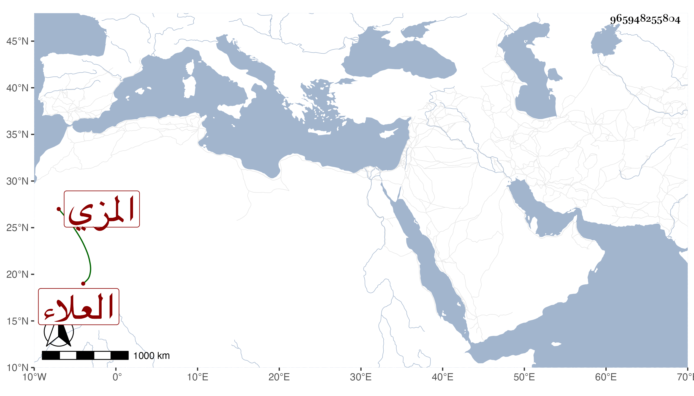

0902Sakhawi.DawLamic.ITO20230111-ara1.EIS1600.965948255804
Biography ID: 965948255804
1084
علي بن محمد بن علي العلاء الطرسوسي المزي . استجازه لي إبراهيم العجلوني في سنة خمسين وقال أنه حضر على ابن أميلة والزين القرشي وابن رجب وأنه سمعه يقول : أرسل إلي الزين العراقي يستعين بي في شرح الترمذي قال وكان العلاء هذا ناظر الجامع المرجاني بالمزة . قلت ومات بعد يسير فالله أعلم .
